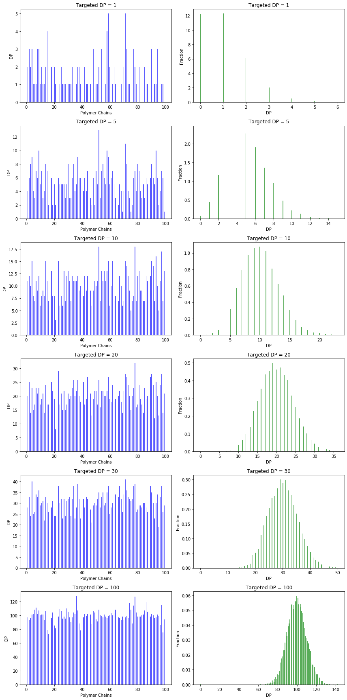

import matplotlib as mplimport numpy as npimport matplotlib.pyplot as plt# Number of polymer chains (Feel free to change the value, but keep it > or = 100).NPoly =10000# Different targeted degree of polymerization (Feel free to add or to delete numbers, or to change the values).DP_Targ = np.array([1, 5, 10, 20, 30, 100]) # Number of monomers.NMon = NPoly*DP_Targ.max() # Each monomer goes to one polymer chain randomly.polym = np.random.randint(1, NPoly, NMon) mpl.rcParams['figure.figsize'] = (12.0, 4.0*len(DP_Targ))# Calculate the degree of polymerization of each chain.DP = np.zeros((len(DP_Targ), NPoly)) plt.subplots(len(DP_Targ), 2)k =0index = np.arange(1, 100)while k <len(DP_Targ):for i in polym[0:NPoly*DP_Targ[k]]: DP[k, i-1] = DP[k, i-1] +1 plt.subplot(len(DP_Targ), 2, 2*k+1) plt.bar(index,DP[k, 0:99], 0.5, alpha=0.65,color='b') plt.xlabel('Polymer Chains') plt.ylabel('DP') plt.title('Targeted DP = %r'%DP_Targ[k]) plt.subplot(len(DP_Targ), 2, 2*(k+1)) plt.hist(DP[k], 200, density=1, facecolor='green', alpha=0.65) plt.xlabel('DP') plt.ylabel('Fraction') plt.title('Targeted DP = %r'%DP_Targ[k]) k = k +1# Display 100 polymer chains to illustrate the deviation of chain lengths (left side).# Display the chain length distribution (right side).plt.tight_layout()plt.show()

2. Derivation
Given the number of monomers \(N_{mon}\) and the number of polymers \(N_{poly}\). The number average degree of polymerization \(\langle DP\rangle = N_{mon}/N_{poly}\). The fraction of polymers with a given \(DP\) (\(x_{DP}\)) can be calculated as following.
Considering one monomer to be added to one perticular polymer chain, the propability is \(1/N_{poly}\). The propability that this monomer will not be added to this perticular polymer chain is \(1-1/N_{poly}\).
If a polymer chain contains \(n\) monomer units after polymerization, \(n\) monomers should have been added to this polymer chain with the propability \((1/N_{poly})^n\), and the rest \(N_{mon}-n\) monomers should NOT have been added to this polymer chain the propability of which is \((1-1/N_{poly})^{N_{mon}-n}\). Finally, the possible ways to pick out \(n\) monomers from \(N_{mon}\) there are
See Polymer Physics by Rubinstein 2003 Page 25
The number fraction distribution function (the probability that a given chain has degree of polymerization N) is given by the Poisson distribution function:
\[n_N=\frac{(N_n-1)^{N-1}}{(N-1)!}\exp(1-N_n)\]
The weight fraction distribution function is determined following equation: